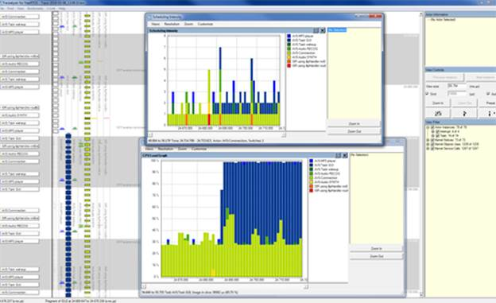

|
STVS4A
v1.1.1
|
|
STVS4A
v1.1.1
|
STVS4A provides some tools to help the application debugging. Memory leak tracking is critical for MCU because the memory is a rare resource and a leak, even small, will consume the memory and will crash for sure your application in a short or very long delay. The JSON formatting is also a key point, the interaction and dialogue model must be accurate with ALEXA expectations, and otherwise Alexa will close the conversation. The thread management is the last point we must pay attention. An application must pay attention to the priorities and leave enough CPU to the vital threads such as IP/HTTP/TLS. Usually an application such as UI doesn’t need to run at the high level. For all those tricky aspects, STVS4A provides tools to monitor and to be aware concerning the internal machine states.
STVS4A has an instrumentation to track memory integrity. STVS4A uses memory pools completely under the application control. Because the connection task could be deleted at any time due to a disconnection. Allocated blocks must be controlled and reinitialized for each startup. A memory pool manages small memory block for temporary buffer. This block is created and deleted for each Connection/disconnection HTTP/2. It possible to remove this management by defining AVS_NO_SHORT_OBJECT_POOL in your project. In this case, short malloc will uses the memory HEAP.
Tracking memory corruptions is always painful, STVS4A provides an instrumentation allowing to check the heap integrity. This mechanism is always active in debug mode for memory pools. For each call to malloc/free functions, the module checks if the database local pointer is coherent. It is also possible to active a more intrusive tool that will perform a complete block chaining check. By default, this task won’t be done since the flag m_checkFreq = 0. If the flag is greater than 0, it represents the check frequency block chaining check. If m_checkFreq = 1, the check will occur for each call to the alloc API, m_checkFreq = N, the check will occur every N calls to the alloc API. Warning this tool is very intrusive and will generate huge delay. If a corruption is detected, the memory pool manager will generate an AVS_ASSERT.
This mechanism works for pools, but not for the HEAP because the HEAP is managed by stdlib. But it is possible to extend this mechanism to the HEAP on IAR tool chain. The tools must be used carefully. The define AVS_USE_GLOBAL_CURRUPTION_TRACKER allows to substitute the stdlib HEAP to an AVS Pool. This flag must be used in combination with a specific option in your project. Add the following lines in the IAR linker Extra Option.
|
--redirect malloc=SAFE_malloc --redirect free=SAFE_free --redirect realloc=SAFE_realloc --redirect calloc=SAFE_calloc
|
Option IAR linker Extra Option
Using this build option, all calls to stdlib API will be routed to an internal AVS equivalent, and STVS4A mem will check the HEAP coherency.
When AVS_USE_GLOBAL_CURRUPTION_TRACKER and AVS_USE_LEAK_DETECTOR are active, we can track memory leaks. This tool is already mapped on the GUI example. When you clique on the ST logo, STVS4A will print a memory mapping difference between the current memory chaining and the last one. The tool will print also le fragment number in the HEAP. The first click will display all fragments, the next one only the difference. To use this tool correctly, you have to click once on the ST logo, then, do an action on your application that you suspect to produce memory leaks, and then, click again. If the number of fragment is unchanged, this means that there are no leaks. If the number of fragment is different, this means that some allocations are not freed and the console will print the address and size of those fragments (you have to analyze those blocks and check if it is normal or not). If the number of fragment is equal, but the tool prints some fragments, it could be normal, it is probably due to some reallocations.
In the following console snippet. We can see 2 leaks. The first one occurs before the event “what time is it” and a second click after the interaction is completed. The dump shows no leak (177 frags and total allocation of changed) and 1 re-alloc due to the token exchanged between the server and STVS4A.
|
Leak detector : Current 177 frags, last 177 frags total : 214681 bytes 11:17:53 : Start Rec : EVT_START_REC(0) 11:17:58 : Stop Rec : EVT_STOP_REC(0) 11:17:58 : Start Speak : EVT_START_SPEAK(0) 11:18:00 : Stop Speak : EVT_STOP_SPEAK(0) Leak detector : Current 177 frags, last 177 frags total : 214562 bytes 000:New Block c0433810:00112 |
STVS4A provides a mechanism that dumps JSON events and directives. STVS4A can dump JSON script on the serial console. By default, this option is disabled, but you can enable it using the following code.
|
AVS_Set_Debug_Level( AVS_TRACE_LVL_DEFAULT | _TRACE_LVL_JSON | AVS_TRACE_LVL_JSON_FORMATED );
|
There are two options to visualize JSON scripts. JSON scripts are always sent or received in compact mode by ALEXA. AVS_TRACE_LVL_JSON allows to show JSON script exactly as it was sent or received. If we add AVS_TRACE_LVL_JSON_FORMATED, STVS4A will re-format the JSON script to be human readable. Notice: Using AVS_TRACE_LVL_JSON_FORMATED takes time to print and format and could be intrusive, if there are a too much traces in same time.
STVS4A is instrumented to provide a maximum feedback to the developer during the application LiveCycle. STVS4A shows traces from the core implementation and also in some demo services provided in the package. STVS4A uses intensively asserts, AVS_ASSERT and AVS_VERIFY are used to catch potential issues and reports them to the developer where the error occurs. ASSERTS shows the file, line number and the reason of the failure.
AVS_ASSERT checks a result and fire an exception if the condition is FALSE, AVS_VERIFY does the same, but the code in the brackets will be kept in release build. At the opposite for AVS_ASSERT, all code between brackets will be vanish in release build. It is very important do not confuse both macros. ASSERS will produce the following traces on the console and will never return (infinite loop you can break from the debugger and inspect the call stack).
|
AVS_ASSERT(pHandle != 0);
Console : Assert : pHandle != 0 mycode.c:147
|
AVS_VERIFY and AVS_ASSERT produce a lot of character strings. So, this consumes the flash and increase the flashing delay. ASSERTS are available only in debug mode. In release, macros do nothing. It is possible disable ASSERTS in debug mode using AVS_NO_ASSERT if you want to save space in flash. The define AVS_USE_DEBUG enables the code instrumentation.
STVS4A exposes some macros to print messages on the serial and filter them according to a debug space. There are several macros such as AVS_TRACE_XXX, the application can select the debug space using AVS_Set_Debug_Level and AVS_TRACE_LVL_XXXX debug space selector. Those traces produce also a lot of character strings. When the application is built in release mode, STVS4A removes automatically some trace spaces and keeps only AVS_TRACE_LVL_ERROR and AVS_TRACE_LVL_INFO. All other strings used with other trace levels will be vanish. The DEMO package has several build configurations. The “DELIVERY” configuration, produces a code without instrumentation and built for the size optimization.
STVS4A has a configuration ready to use the tracealyzer from Percepio. This configuration is active only in IAR tool chain. Tracealyzer allows to monitor FreeRTOS objects and is a very powerful tool to verify the perfect behavior of the operating system. To use tracealyzer, select the configuration STAVE_XX_TRACEALYZER for the IAR configuration menu and build the project.
Please visit the following links

Example Snap TraceAnalyzer
STVS4A has a mode able to monitor Audio input and output. This tool is implemented in service_audio_feed_usb.c. There are two way to use the module. If you doesn’t need this feature, you can simply exclude this module from the project and the USB won’t be initialized. Notice that this feature is deceived in DELIVERY Configurations.
Otherwise you can connect the USB HS socket to your PC and you will see a new Recording device called “STM32 Audio STVS4A in FS Mode”. The Recording device supports 2 frequencies you can change those frequencies using the property button and advanced Tab. The Two frequencies are 16K (microphone frequency) and 48K (speaker frequency).
· Inject sample manually
· Inject Samples Automatically
It is the default mode, this mode supposes that you call the function USER_USB_CopyBuffer with the rights parameters and you push stereo samples block manually. This mode is used to debug audio streams and capture the audio wave from a buffer.
In this mode, the USB will be feed by a callback directly from the audio porting layer. In this mode you have just to define USB_CAPTURE_HOOK with an AVS_FEED_XXXX. And the audio driver will feed the USB driver directly. There are 3 callbacks registered in the porting layer.
|
AVS_FEED_INPUT_CALLBACK |
The USB will be connected to the microphone , only the 1 first microphone will be used, the current implementation copy the Left sample in the right channel |
|
AVS_FEED_OUTPUT_CALLBACK |
The USB will be connected to the speaker at 48K stereo. |
|
AVS_FEED_AEC_CALLBACK |
If the porting layer has an echo cancellation, The USB will be connected to: Channel Left audio coming from the microphone. Channel right, the microphone processed with the echo cancelation. |
The first thing to do this to select the right frequency in the “STM32 Audio STVS4A in FS Mode” device property. If you capture the microhone or AEC, you have to select 16K otherwise 48K
Then, you can use a tool such as Audacity (https://sourceforge.net/projects/audacity/) . Select the same sampling rate and the “STM32 Audio STVS4A in FS Mode” device.
STVS4A will acts such as a microphone that you can record
 1.8.4
1.8.4